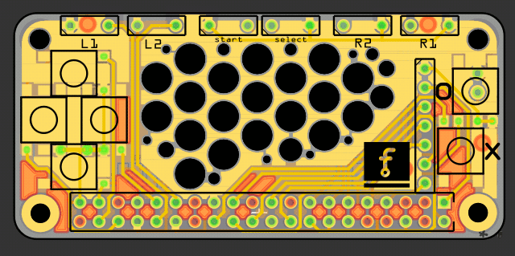

Jumping on the Bandwagon¶
Published on 2017-06-22 in Ye Olde Nowt.
Everybody and their dog seem to be making retro handheld consoles out of the pi zero, so I decided it’s time to join the party. This one is mostly inspired by the project-21553 project – but I didn’t have the cool rocker, and I wanted to try a horizontal orientation. I also used an OLED screen in place of a TFT, because of better viewing angles. Oh, and instead of the joystick I used standard buttons. But otherwise it’s very similar.
I started by testing the screen. I simply connected it to the SPI port and followed the instructions from project-21553 about configuring it. Except I used the “pioled” for the display driver name. I stumbled upon the same bug with rotated display, and I solved it in the same way – when that gets fixed, we can both remove the hacks.
Once I knew the display works, I became confident enough about all the rest to design and order the PCB.

It’s basically just the screen connections, the low-pass filters for the speakers, and all the rest of pins are connected to the buttons. And yes, I got a bit wild with the holes. Sue me.